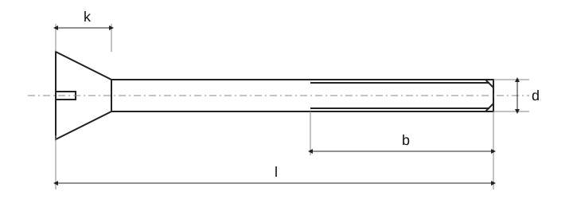

Vis autotaraudeuses à tête fraisée à empreinte cruciforme
Source historique; valeurs et exceptions non intégralement vérifiées selon la norme actuelle.

Vis autotaraudeuses à tête fraisée à empreinte cruciforme · Dimensions
| Paramètre | ST2,2 | ST2,9 | ST3,5 | ST4,2 | ST4,8 | ST5,5 | ST6,3 | ST8 | ST9,5 |
|---|---|---|---|---|---|---|---|---|---|
| Pas P | 0,8 | 1,1 | 1,3 | 1,4 | 1,6 | 1,8 | 1,8 | 2,1 | 2,1 |
| a _max.1) | 0,8 | 1,1 | 1,3 | 1,4 | 1,6 | 1,8 | 1,8 | 2,1 | 2,1 |
| d _ktheor. | 4,4 | 6,3 | 8,2 | 9,4 | 10,4 | 11,5 | 12,6 | 17,3 | 20 |
| d _k max.2) | 3,8 | 5,5 | 7,3 | 8,4 | 9,3 | 10,3 | 11,3 | 15,8 | 18,3 |
| d _k min.2) | 3,5 | 5,2 | 6,9 | 8,0 | 8,9 | 9,9 | 10,9 | 15,4 | 17,8 |
| k _max.2) | 1,1 | 1,7 | 2,35 | 2,6 | 2,8 | 3,0 | 3,15 | 4,65 | 5,25 |
| r _max. | 0,8 | 1,2 | 1,4 | 1,6 | 2,0 | 2,2 | 2,4 | 3,2 | 4,0 |
| Empreinte cruciforme · Taille d’empreinte cruciforme | 0 | 1 | 2 | 2 | 2 | 3 | 3 | 4 | 4 |
| Empreinte cruciforme · Tvar H · m | 1,9 | 3,2 | 4,4 | 4,6 | 5,2 | 6,6 | 6,8 | 8,9 | 10 |
| Empreinte cruciforme · Tvar H · hloubka_min. | 0,9 | 1,7 | 1,9 | 2,1 | 2,7 | 2,8 | 3,0 | 4,0 | 5,1 |
| Empreinte cruciforme · Tvar H · hloubka_max. | 1,2 | 2,1 | 2,4 | 2,6 | 3,2 | 3,3 | 3,5 | 4,6 | 5,7 |
| Empreinte cruciforme · Tvar Z · m | 2 | 3,2 | 4,4 | 4,6 | 5,2 | 6,6 | 6,8 | 8,9 | 10 |
| Empreinte cruciforme · Tvar Z · hloubka_min. | 0,95 | 1,6 | 1,75 | 2,05 | 2,6 | 2,75 | 3,00 | 4,15 | 5,2 |
| Empreinte cruciforme · Tvar Z · hloubka_max. | 1,20 | 2 | 2,2 | 2,5 | 3,05 | 3,2 | 3,45 | 4,60 | 5,65 |
| y ^3) · tvar C | 2 | 2,6 | 3,2 | 3,7 | 4,3 | 5 | 6 | 7,5 | 8 |
| y ^3) · tvar F | 1,6 | 2,1 | 2,5 | 2,8 | 3,2 | 3,6 | 3,6 | 4,2 | 4,2 |
Vis autotaraudeuses à tête fraisée à empreinte cruciforme · Dimensions
| l [mm] | tvar C | Δl | tvar F^4) | l _min. | d / ST2,2 | d / ST2,9 | d / ST3,5 | d / ST4,2 | d / ST4,8 | d / ST5,5 | d / ST6,3 | d / ST8 | d / ST9,5 |
|---|---|---|---|---|---|---|---|---|---|---|---|
| 4,5 | 0,8 | 3,7 | + | – | – | – | – | – | – | – | – |
| 6,5 | 0,8 | 5,7 | + | + | – | – | – | – | – | – | – |
| 9,5 | 0,8 | 8,7 | + | + | + | + | + | – | – | – | – |
| 13 | 0,8 | 12,2 | + | + | + | + | + | + | + | – | – |
| 16 | 0,8 | 15,2 | + | + | + | + | + | + | + | + | + |
| 19 | 0,8 | 18,2 | — | + | + | + | + | + | + | + | + |
| 22 | 0,8 | 20,7 | — | — | + | + | + | + | + | + | + |
| 25 | 0,8 | 23,7 | — | — | + | + | + | + | + | + | + |
| 32 | 1,3 | 30,7 | — | — | — | + | + | + | + | + | + |
| 38 | 1,3 | 36,7 | — | — | — | — | — | + | + | + | + |
| 45 | 1,3 | 43,5 | — | — | — | — | — | — | — | + | + |
| 50 | 1,3 | 48,5 | — | — | — | — | — | — | — | + | + |
Vis autotaraudeuses à tête fraisée à empreinte cruciforme · Contexte normatif
| Élément | Valeur |
|---|---|
| Contexte normatif | ISO 7050:2011 |
| Grade de produit | — |
| Classe de qualité | Norme intégrale nécessaire pour vérifier dimensions, tolérances et toutes les conditions. |
Vis autotaraudeuses à tête fraisée à empreinte cruciforme · Dimensions
| Paramètre | ST2,2 | ST2,9 | ST3,5 | ST4,2 | ST4,8 | ST5,5 |
|---|---|---|---|---|---|---|
| Pas P | 0,8 | 1,1 | 1,3 | 1,4 | 1,6 | 1,8 |
| a _max.1) | 0,8 | 1,1 | 1,3 | 1,4 | 1,6 | 1,8 |
| d _ktheor. | 4,4 | 6,3 | 8,2 | 9,4 | 10,4 | 11,5 |
| d _k max.2) | 3,8 | 5,5 | 7,3 | 8,4 | 9,3 | 10,3 |
| d _k min.2) | 3,5 | 5,2 | 6,9 | 8,0 | 8,9 | 9,9 |
| k _max.2) | 1,1 | 1,7 | 2,35 | 2,6 | 2,8 | 3,0 |
| r _max. | 0,8 | 1,2 | 1,4 | 1,6 | 2,0 | 2,2 |
| Empreinte cruciforme · Taille d’empreinte cruciforme | 0 | 1 | 2 | 2 | 2 | 3 |
| Empreinte cruciforme · Tvar H · m | 1,9 | 3,2 | 4,4 | 4,6 | 5,2 | 6,6 |
| Empreinte cruciforme · Tvar H · hloubka_min. | 0,9 | 1,7 | 1,9 | 2,1 | 2,7 | 2,8 |
| Empreinte cruciforme · Tvar H · hloubka_max. | 1,2 | 2,1 | 2,4 | 2,6 | 3,2 | 3,3 |
| Empreinte cruciforme · Tvar Z · m | 2 | 3,2 | 4,4 | 4,6 | 5,2 | 6,6 |
| Empreinte cruciforme · Tvar Z · hloubka_min. | 0,95 | 1,6 | 1,75 | 2,05 | 2,6 | 2,75 |
| Empreinte cruciforme · Tvar Z · hloubka_max. | 1,20 | 2 | 2,2 | 2,5 | 3,05 | 3,2 |
| y ^3) · tvar C | 2 | 2,6 | 3,2 | 3,7 | 4,3 | 5 |
| y ^3) · tvar F | 1,6 | 2,1 | 2,5 | 2,8 | 3,2 | 3,6 |
Vis autotaraudeuses à tête fraisée à empreinte cruciforme · Dimensions
| Paramètre | ST6,3 | ST8 | ST9,5 |
|---|---|---|---|
| Pas P | 1,8 | 2,1 | 2,1 |
| a _max.1) | 1,8 | 2,1 | 2,1 |
| d _ktheor. | 12,6 | 17,3 | 20 |
| d _k max.2) | 11,3 | 15,8 | 18,3 |
| d _k min.2) | 10,9 | 15,4 | 17,8 |
| k _max.2) | 3,15 | 4,65 | 5,25 |
| r _max. | 2,4 | 3,2 | 4,0 |
| Empreinte cruciforme · Taille d’empreinte cruciforme | 3 | 4 | 4 |
| Empreinte cruciforme · Tvar H · m | 6,8 | 8,9 | 10 |
| Empreinte cruciforme · Tvar H · hloubka_min. | 3,0 | 4,0 | 5,1 |
| Empreinte cruciforme · Tvar H · hloubka_max. | 3,5 | 4,6 | 5,7 |
| Empreinte cruciforme · Tvar Z · m | 6,8 | 8,9 | 10 |
| Empreinte cruciforme · Tvar Z · hloubka_min. | 3,00 | 4,15 | 5,2 |
| Empreinte cruciforme · Tvar Z · hloubka_max. | 3,45 | 4,60 | 5,65 |
| y ^3) · tvar C | 6 | 7,5 | 8 |
| y ^3) · tvar F | 3,6 | 4,2 | 4,2 |
Vis autotaraudeuses à tête fraisée à empreinte cruciforme · Dimensions
| l [mm] | tvar C | Δl | tvar F^4) | l _min. | d / ST2,2 | d / ST2,9 | d / ST3,5 | d / ST4,2 |
|---|---|---|---|---|---|---|
| 4,5 | 0,8 | 3,7 | + | – | – | – |
| 6,5 | 0,8 | 5,7 | + | + | – | – |
| 9,5 | 0,8 | 8,7 | + | + | + | + |
| 13 | 0,8 | 12,2 | + | + | + | + |
| 16 | 0,8 | 15,2 | + | + | + | + |
| 19 | 0,8 | 18,2 | — | + | + | + |
| 22 | 0,8 | 20,7 | — | — | + | + |
| 25 | 0,8 | 23,7 | — | — | + | + |
| 32 | 1,3 | 30,7 | — | — | — | + |
| 38 | 1,3 | 36,7 | — | — | — | — |
| 45 | 1,3 | 43,5 | — | — | — | — |
| 50 | 1,3 | 48,5 | — | — | — | — |
Vis autotaraudeuses à tête fraisée à empreinte cruciforme · Dimensions
| l [mm] | d / ST4,8 | d / ST5,5 | d / ST6,3 | d / ST8 | d / ST9,5 |
|---|---|---|---|---|---|
| 4,5 | – | – | – | – | – |
| 6,5 | – | – | – | – | – |
| 9,5 | + | – | – | – | – |
| 13 | + | + | + | – | – |
| 16 | + | + | + | + | + |
| 19 | + | + | + | + | + |
| 22 | + | + | + | + | + |
| 25 | + | + | + | + | + |
| 32 | + | + | + | + | + |
| 38 | — | + | + | + | + |
| 45 | — | — | — | + | + |
| 50 | — | — | — | + | + |
Vis autotaraudeuses à tête fraisée à empreinte cruciforme · Contexte normatif
| Élément | Valeur |
|---|---|
| Contexte normatif | ISO 7050:2011 |
| Grade de produit | — |
| Classe de qualité | Norme intégrale nécessaire pour vérifier dimensions, tolérances et toutes les conditions. |